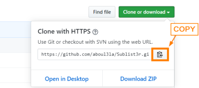

install software
Install with git from Github1. Go to the GitHub
repository
2. Copy the .git url
3. In the bash terminal change the folder where we want to install the
software
example:
4. Clone the software here:
example:
git clone https://github.com/aboul3la/Sublist3r.git
7. If present follow the instructions in the file .md
8. setup
◇ with pip
cd Sublist3r
pip install .
◇ using 'setup.py' nor 'pyproject.toml'
Install with wget from
Githubexample of one line to install
BeRoot
kali@kali:~/$ mkdir /home/$USER/bin; wget https://github.com/AlessandroZ/BeRoot/archive/master.zip -P /home/$USER/bin; unzip -d /home/$USER/bin /home/$USER/bin/master.zip; rm /home/$USER/bin/master.zip; cd /home/$USER/bin/BeRoot-master/Linux/;python beroot.py